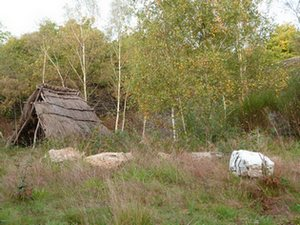
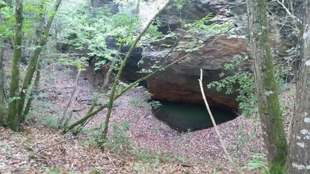
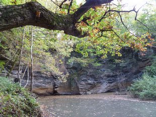
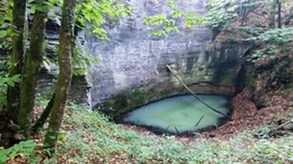
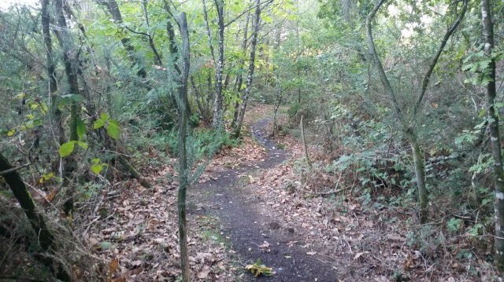

Qué ver por la zona
Las canteras de Saint Jacob
Antiguas minas de esquisto a cielo abierto, abiertas en 1870, a 200 metros de la casa de huéspedes.
A 200 metros de nuestra casa de huéspedes, unas minas a cielo abierto que datan de 1870. La cabaña de los canteros marca el inicio de la visita: no dude en perderse entre los bosquecillos.
A lo largo del recorrido descubrirá numerosos pozos. Nos gusta pasear por aquí para disfrutar de la calma, la belleza y los aromas que nos rodean.
Se han realizado algunas mejoras para que pueda disfrutar de este lugar mágico: hay bancos a su disposición. Entre excavación y excavación, el sotobosque —sobre todo en otoño— le mostrará una amplia paleta de colores.
Si ha sabido serpentear por las canteras, descubrirá un precioso camino hundido que le llevará de vuelta a su punto de partida.




